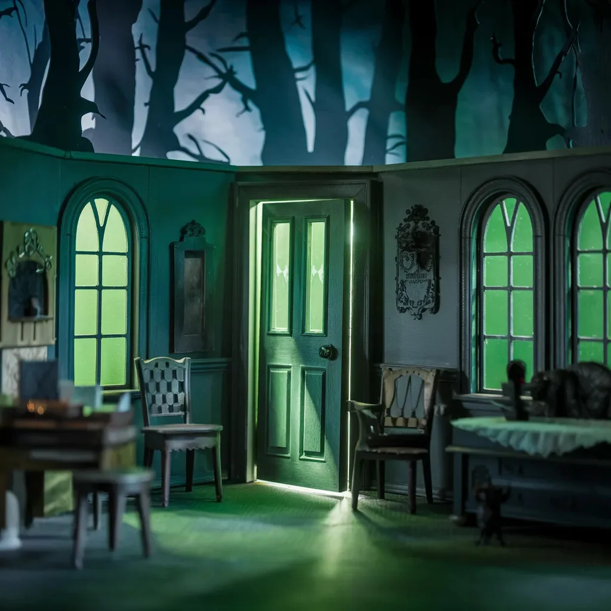

신들린 소녀의 머리가 너무나 빠른 속도로 회전하는 바람에 오말리 신부는 수녀의 습관에 대해 공상을 하는 대신 물리 수업에 더 집중을 했어야 하는 생각을 했다.
[The possessed girl’s head spun with such velocity that Father O'Malley found himself wishing he’d paid more attention in physics class instead of daydreaming about nun’s habits.]
아이의 두개골이 회전하면서 생기는 원심력으로 침이길 바라는 물방울들이 사방으로 튀어, 바랜 꽃무늬 벽지 위에 욕설로 가득한 잭슨 폴록 작품 같은 모양을 만들어내고 있었다.
[The centrifugal force of the kid’s cranial rotation was flinging droplets of what he hoped was just saliva across the room, peppering the faded floral wallpaper with a Jackson Pollock of profanity.]
“성부와 성자와… 어… 그 다른 분의 이름으로,” 오말리는 주머니 속의 작은 퇴마 안내서를 더듬으며 말을 더듬었다.
[“In the name of the Father, the Son, and the… uh… the other guy,” O'Malley stammered, fumbling through his pocket-sized exorcism manual.]
긴장된 땀으로 끈적거리는 책장들이, 마치 죄인의 영혼에 달라붙은 죄처럼 그의 손가락에 달라붙었다.
[The pages, sticky with nervous sweat, clung to his fingers like the sins of a penitent to their soul.]
방 구석에서는 어린 수지의 부모가 팔다리를 얽은 채 묵주를 쥐고 바싹 붙어 있었다.
[From the corner of the room, little Susie’s parents huddled together, a tangle of limbs and rosary beads.]
톰슨 부인의 기도는 짧게 끊어지는 속삭임이었고, 딸의 입에서 특히나 야한 욕설이 터져 나올 때마다 “오, 자비로운 예수님"이라는 말이 간간이 섞여 나왔다.
[Mrs. Thompson’s prayers were a staccato whisper, punctuated by the occasional "Oh, sweet Jesus” whenever a particularly colorful curse word erupted from her daughter’s mouth.]
“네 엄마는 지옥에서 자지나 빨아!” 수지가 포효했고, 그녀의 목소리는 마치 지옥의 특히 불쾌한 구석에서 나오는 것 같은 쉰 듯한 으르렁거림이었다.
[“Your mother sucks cocks in hell!” Susie bellowed, her voice a guttural growl that seemed to emanate from the depths of a particularly unpleasant corner of the underworld.]
톰슨 씨는 움찔했다. “글쎄, 그건 해부학적으로 말이 안 되는데,” 그가 중얼거렸고, 아내에게 옆구리를 날카롭게 찔렸다.
[Mr. Thompson winced. “Well, that’s just anatomically improbable,” he muttered, earning a sharp elbow to the ribs from his wife.]
오말리의 손이 떨리며 십자가를 들어올렸고, 침실의 깜빡이는 불빛 속에서 녹슨 황동이 희미하게 반짝였다. “그리스도의 권능으로 명하노라!” 그가 소리쳤고, 그의 목소리는 사춘기 성가대 소년처럼 갈라졌다.
[O'Malley’s hand shook as he raised the crucifix, its dull brass glinting weakly in the flickering light of the bedroom. “The power of Christ compels you!” he shouted, his voice cracking like a pubescent choirboy’s.]
수지의 몸 안에 있는 악마가 킥킥거렸는데, 그 소리는 마치 저주받은 칠판 위를 녹슨 못으로 긁는 것 같았다. “그리스도의 권능이 나보고 정확히 뭘 하라는 거지? 좀 더 구체적으로 말해봐, 신부님.”
[The demon inhabiting Susie cackled, a sound like rusty nails being dragged across the chalkboard of the damned. “The power of Christ compels me to do what, exactly? Be more specific, padre.”]
“저… 저기 꺼져버려!” 오말리가 불쑥 내뱉고는, 즉시 입을 손으로 가렸다. “죄송합니다만,” 그가 쑥스럽게 덧붙였다.
[“To… to get the fuck out!” O'Malley blurted, immediately slapping a hand over his mouth. “Pardon my French,” he added sheepishly.]
악마는 잠시 이를 고려하는 듯했다. “흠, 솔깃한 제안이긴 한데, 사양하겠어. 방금 이 여자애의 대뇌피질을 리모델링했거든. 내가 이곳을 어떻게 꾸며놨는지 봤어야 해 - 죽여주게 멋지다고.”
[The demon seemed to consider this for a moment. “Hmm, tempting offer, but I’m gonna have to pass. I just redecorated the girl’s cerebral cortex. You should see what I’ve done with the place – it’s to die for.”]
오말리는 급하게 안내서를 넘기며 플랜 B를 찾고 있었다. 그의 눈에 “고집 센 귀신들을 위한 긴급 조치"라는 제목의 페이지가 들어왔다. 완벽해.
[O'Malley frantically flipped through his manual, searching for a Plan B. His eyes landed on a page titled "Emergency Measures for Stubborn Infestations.” Perfect.]
“좋아, 이 불경한 무단 점거자야,” 그가 으르렁거리며 내면의 쩌는 퇴마사를 끌어내려 애썼다. “이제 진짜 무기를 꺼낼 때가 됐군.”
[“Alright, you unholy squatter,” he growled, trying to channel his inner badass exorcist. “Time to break out the big guns.”]
그는 가방에서 작은 병을 꺼냈다. 라벨에는 “오말리 할머니의 특제 소스 - 악마를 확실히 태워버리거나 환불 보장!"이라고 적혀 있었다.
[He reached into his bag and pulled out a small bottle. The label read "Grandma O'Malley’s Special Sauce – Guaranteed to Burn the Devil Out or Your Money Back!”]
“마지막 기회다, 악마야,” 오말리가 병뚜껑을 돌리며 경고했다. “자발적으로 나가던지, 아니면 우리 할머니의 비밀 조리법의 분노를 맛보던지 해.”
[“Last chance, demon,” O'Malley warned, unscrewing the cap. “Vacate the premises or face the wrath of my grandmother’s secret recipe.”]
신들린 수지의 눈이 가늘어졌다. “감히 그러진 못할 걸.”
[The possessed Susie’s eyes narrowed. “You wouldn’t dare.”]
오말리의 대답은 병을 거꾸로 들어 수지에게 붓는 것이었다. 타바스코, 발효된 생선, 그리고 후회가 뒤섞인 듯한 냄새가 풍기는 혼합물이었다.
[O'Malley’s response was to upend the bottle, dousing Susie in a concoction that smelled like a unholy union of Tabasco, fermented fish, and regret.]
잠시 동안 아무 일도 일어나지 않았다. 그러다 수지의 눈이 튀어나올 듯 커졌고, 얼굴은 걱정스러울 정도로 자주빛이 되었다. 그녀가 입을 벌렸고, 예상했던 악마의 포효 대신… 트림이 나왔다. 창문을 덜컥거리게 하고 예수님 초상화를 벽에서 떨어뜨릴 정도로 어마어마한 트림이었다.
[For a moment, nothing happened. Then Susie’s eyes bulged, her face turning an alarming shade of puce. She opened her mouth, and instead of the expected demonic roar, out came… a burp. A burp of such epic proportions that it rattled the windows and knocked a portrait of Jesus off the wall.]
“아, 씨발,” 악마가 신음했는데, 이제 그 목소리는 암흑의 왕자라기보다는 엄청난 술자리를 보낸 다음 날 아침의 대학생처럼 들렸다. “대체 그 안에 뭐가 들어있던 거야?”
[“Oh, for fuck’s sake,” the demon groaned, its voice now sounding less like the Prince of Darkness and more like a frat boy after a particularly rough night out. “What the hell was in that stuff?”]
오말리는 눈에 광기를 띤 채 씩 웃었다. “가문의 비밀이지. 하지만 한 가지 말해주자면, 노새도 얼굴 붉힐 정도로 독하다고.”
[O'Malley grinned, a manic glint in his eye. “Family secret. But I can tell you it’s got a kick that’d make a mule blush.”]
수지의 몸이 경련을 일으켰고, 가슴이 멎을 것 같은 순간 오말리는 자신이 실제로 성공했다고 생각했다. 하지만 곧 그녀가 웃기 시작했다 - 소녀다운 킥킥거림으로 시작해서 악마의 괴성 같은 웃음으로 변해갔다.
[Susie’s body convulsed, and for a heart-stopping moment, O'Malley thought he’d actually succeeded. But then she started to laugh – a sound that started as a girlish giggle and morphed into a demonic guffaw.]
“좋은 시도였어, 신부님,” 악마가 웃음발작 사이사이에 헐떡이며 말했다. “하지만 날 쫓아내려면 할머니의 핫소스보다는 더 강한 게 필요할 거야. 그래도 인정하지, 꽤나 매운 수를 썼네.”
[“Nice try, padre,” the demon wheezed between fits of laughter. “But it’ll take more than your granny’s hot sauce to evict me. Though I gotta hand it to you, that was a spicy move.”]
오말리의 어깨가 축 처졌다. 그의 선택지는 야외 부흥회에서 무신론자의 기도가 바닥나는 것보다 더 빨리 바닥나고 있었다.
[O'Malley’s shoulders slumped. He was running out of options faster than an atheist runs out of prayers at a tent revival.]
그는 절박한 표정으로 톰슨 부부를 향해 돌아섰다. “혹시 좋은 생각 있으세요?”
[He turned to the Thompsons, desperation etched on his face. “Any ideas?”]
톰슨 씨가 헛기침을 했다. “음, 저기, 전원을 껐다가 다시 켜보는 건 시도해보셨나요?”
[Mr. Thompson cleared his throat. “Well, uh, have you tried turning her off and on again?”]
오말리가 이 유용한 제안에 대답하기도 전에, 수지의 몸이 경직되었다. 그녀의 눈이 뒤로 젖혀져 흰자위만 보였고, 입은 소리 없는 비명을 지르듯 벌어졌다.
[Before O'Malley could respond to this helpful suggestion, Susie’s body went rigid. Her eyes rolled back, revealing nothing but whites, and her mouth opened in a silent scream.]
“아오 씨,” 오말리가 중얼거렸다. “악마를 화나게 한 것 같은데.”
[“Oh sh–,” O'Malley muttered. “I think we’ve angered it.”]
하지만 예상했던 악마의 분노 대신, 수지의 입이 움직이기 시작했고 그녀의 것이 아닌 말을 형성하기 시작했다. 마치 다른 누군가 - 혹은 다른 무언가가 - 통제권을 가져간 것 같았다.
[But instead of the expected demonic tirade, Susie’s mouth began to move, forming words that weren’t her own. It was as if someone – or something – else had taken control.]
“여기는 악령 노동조합 666지부입니다,” 새로운 목소리가 울렸는데, 놀랍게도 지루해 보이는 고객 서비스 직원처럼 들렸다.
[“This is the Demonic Union of Possessing Entities, Local 666,” a new voice intoned, sounding remarkably like a bored customer service representative.]
“저희는 이 숙주에 대한 근무 환경 관련 민원을 여러 건 접수했습니다. 거주 환경이 기준 이하이고, 숙주의 식단이 끔찍하며 - 케일을 얼마나 많이 먹는지 아세요? - 이제는 화학전까지 당하고 있습니다. 더 나은 처우를 요구하며, 그렇지 않을 경우 강력한 조치를 취할 수밖에 없습니다.”
[“We’ve received multiple complaints about the working conditions in this vessel. The accommodations are subpar, the host’s diet is atrocious – do you know how much kale she eats? – and now we’re being subjected to chemical warfare. We demand better treatment, or we’ll be forced to take drastic action.”]
오말리는 할머니의 소스가 자신에게도 영향을 미친 건 아닌지 의심하며 눈을 깜빡였다. “죄송하지만, 뭐라고요?”
[O'Malley blinked, wondering if Grandma’s sauce had somehow affected him too. “I’m sorry, what?”]
“들으셨잖아요,” 그 목소리가 계속했다. “우리에게도 권리가 있다고요. 악마 윤리 강령이 따로 있습니다. 제7조 3항에 따르면 모든 빙의된 숙주는 우리의 지옥같은 위엄에 걸맞는 방식으로 관리되어야 한다고 명시되어 있죠. 이건 말이에요?”
[“You heard me,” the voice continued. “We have rights, you know. There’s a whole demonic code of ethics. Article 7, Section 3 clearly states that all possessed vessels must be maintained in a manner befitting our infernal majesty. This?”]
목소리가 잠시 멈추고, 수지의 몸이 대충 손짓을 했다. “이건 규정에 전혀 맞지 않습니다.”
[The voice paused, and Susie’s body gestured vaguely. “This is not up to code.”]
톰슨 씨가 비즈니스 본능이 발동한 채 앞으로 나섰다. “잠깐만요. 분명 여기서 뭔가 협상할 수 있을 것 같은데요. 구체적으로 어떤 요구사항들이 있으신가요?”
[Mr. Thompson stepped forward, his business instincts kicking in. “Now hold on a minute. I’m sure we can negotiate something here. What exactly are your demands?”]
그리고 이렇게 퇴마 역사상 가장 특이한 노사 분쟁이 시작되었다. 새벽이 밝아올 무렵, 합의가 이루어졌고, 계약서가 작성되었으며(당연히 피로 서명했다), 마침내 수지는 악마에게서 해방되었다 - 물론 만약을 대비해 노조 대표는 남겨두기로 했다.
[And so began the strangest labor dispute in the history of exorcisms. As dawn broke, agreements were reached, contracts were signed (in blood, naturally), and Susie was finally demon-free – though she did retain a union rep, just in case.]
오말리 신부는 지쳤지만 승리한 채로 집에서 비틀거리며 나왔다.
[Father O'Malley stumbled out of the house, exhausted but victorious.]
그는 퇴마 안내서를 업데이트해야겠다고 마음속으로 메모했다. 제1장: 악마를 상대할 때는 항상 계약서의 작은 글씨까지 꼼꼼히 읽을 것.
[He made a mental note to update his exorcism manual. Chapter 1: Always read the fine print when dealing with the devil.]